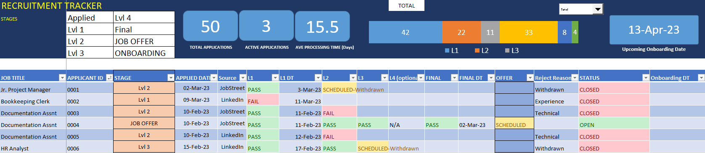
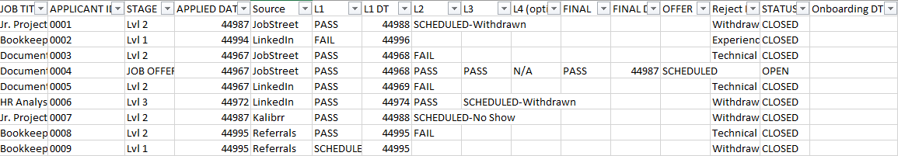
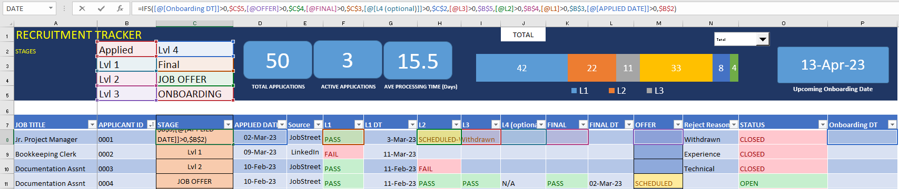
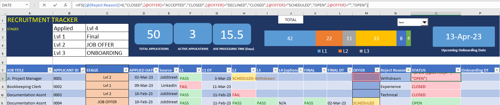
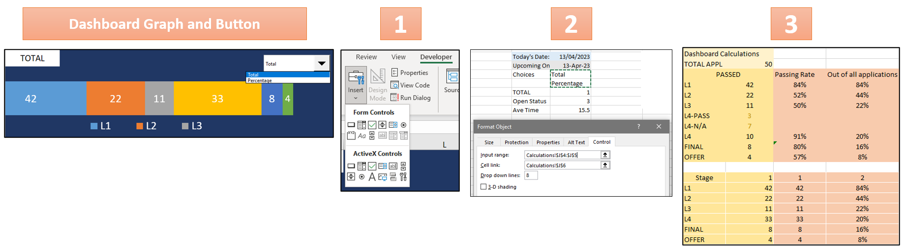

HR Recruitment Data Tracker
This is a Work Project done while I was an HR recruiter in my previous company. The information in this project is dummy data and are used solely to showcase a sample of the tracker.
Excel Table & Header Dashboard
The recruitment tracker has an interactive dashboard comprising three distinct components. The first component is a table that displays the various stages or levels of recruitment that candidates are required to go through. The second component includes a set of numerical tiles and a pipeline chart that present key recruitment metrics in a concise manner. The third component is a date card that shows the next onboarding date to help recruiters stay on track with the recruitment process. The dashboard's interactivity is enhanced by the option to toggle between the total number of applicants and the ratio of applicants that have completed each stage. This dashboard is designed to provide an easy-to-use and accessible way for recruiters to keep track of recruitment progress, manage their time efficiently, and remember the current status of each applicant.
Methodology
Tables
The main table is displayed above. The recruiter is responsible for providing details concerning the candidate, such as the applied job position, dates of application for each stage, the application source, and the onboarding date for the selected candidate. The "Stage" and "Status" columns are cells that have been formatted and their function will be elaborated on at a later point.
These tables above are located in the Calculation Sheet. They are tables used for data validation in creating the lists for columns: "Job Title", "Reject Reason", and "Source". This is to eliminate typing and provide a drop-down selection tool for the user.
Name Manager
To make formulas easier to type out, the Name Manager option is used. Values under columns such as "Applicant_id" are named "L_APPS" when formulating the total number of applications (ex. COUNT(L_APPS))
Logical Formulas
For the "Stage" column, a formula was used to indicate the application status based on the last column the recruiter has updated. Example would be if the recruiter selected "Scheduled" under column "L2" or "Level 2 Interview", then the "Stage" would indicate "Lvl 2".
The "Stage" formula used:
=IFS([@[Onboarding DT]]>0,$C$5,[@OFFER]>0,$C$4,[@FINAL]>0,$C$3,[@[L4 (optional)]]>0,$C$2,[@L3]>0,$B$5,[@L2]>0,$B$4,[@L1]>0,$B$3,[@[APPLIED DATE]]>0,$B$2)

For the "Status" column, a formula was used to indicate whether the application is "Closed" or "Open". The recruiter would need to add a selection under "Reject Reason" in order for the "Status" to close. Additonally, if under the "Offer" column, the cell indicates "Scheduled" then the "Status" is Open. If the "Offer" is "Declined" or "Accepted" the "Status" is Closed.
The "Stage" formula used:
=IFS([@[Reject Reason]]>0,"CLOSED",[@OFFER]="ACCEPTED","CLOSED",[@OFFER]="DECLINED","CLOSED",[@OFFER]="SCHEDULED","OPEN",[@OFFER]="","OPEN")
Conditional Formatting
The conditional formatting manager was used to help the recruiter easily indicate whether an applicant has passed (green), failed (red), or is about to be scheduled (yellow).
Dashboard with Filters
To create the Pipeline Chart, two tables were first created for total number of applications per stage and the percentage of applications per stage. The tables located in the Calculation Sheet were then used to generate the Pipeline Chart that could switch between "Total" and "Percentage" based on user selection through a drop-down menu. The drop-down selection was created with input and cell link in developer mode.
The formula used for linking either the "Total" (1) or "Percentage" (2) table:
=HLOOKUP($J$6,$R$14:$S$20,ROW()-13,0)
Dashboard with Number Cards
To calculate the average processing time (days), a new table which includes the Level 1 (date) column and the Final Intervieww (date) column from the Tracker. The dates would need to be subtracted in order to get the difference. The applicants who didn't reach the Final Interview would have values lower than 0 (e.g. -44900). A formula was used to replace values lower than 0 as "0" and those higher than 0 will be as its orginal values.
These were the formulas used:=IF(W1<0,"0",W1)
Creating number cards for a dashboard involves setting up a table in the Calculations Sheet with formulas to calculate the total applications, total active applications, and average processing time in days. Cards were designed, labeled, and linked to the table's values, including the upcoming onboarding date.
These were the formulas used:Total Applications =COUNTA(L_APPS)Active Applications =COUNTIF(P_Status,"OPEN")Average Processing Time (Days) =AVERAGE(ProcessingTime)Upcoming Onboarding Date: =MIN(IF(Onboarding_DT>=todays.date,Onboarding_DT))